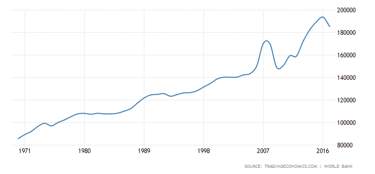
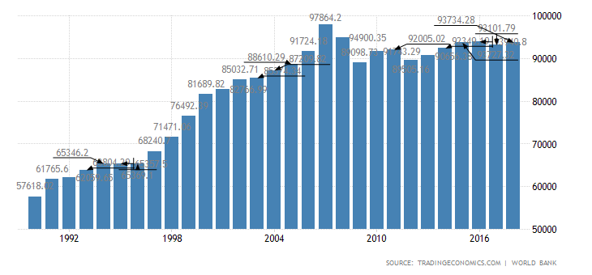
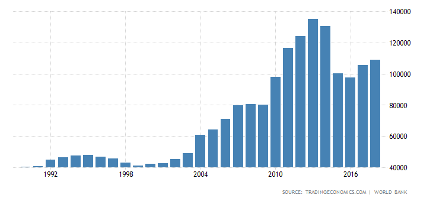
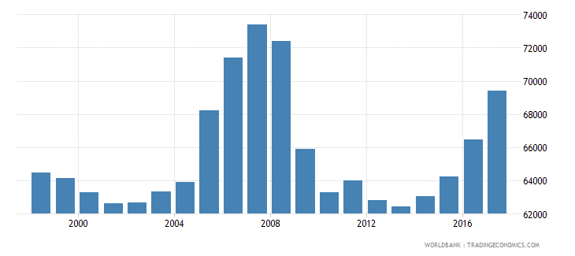
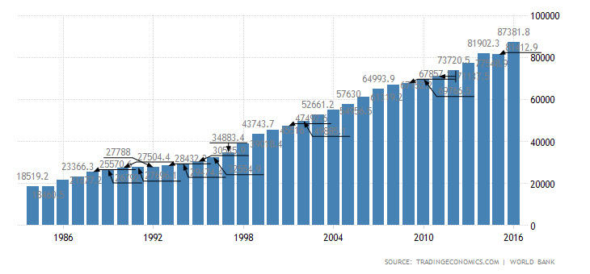
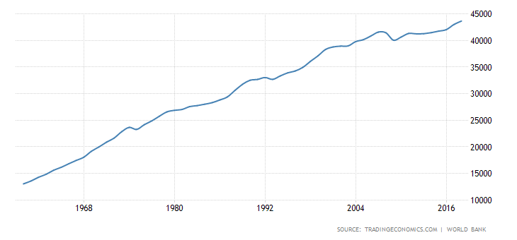
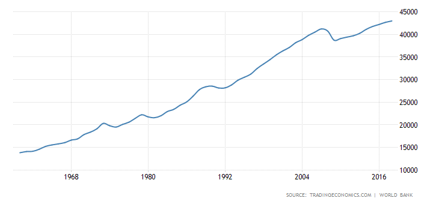
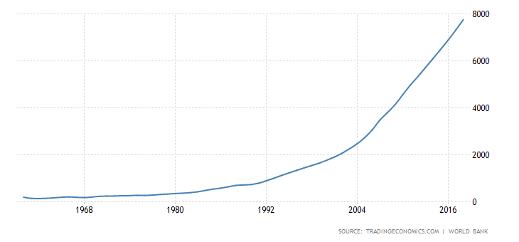

Poverty is a issue that permeates a lot of the discussions today that revolve around equity. In this post, we explore what might cause some of this inequity by focusing on finding certain causes of higher GDP per capita that will be used in future blog posts for more serious mathematical analysis.
First, notice that all of the countries in the top 5 of GDP per capita in 2017 (data obtained from The World Bank at https://data.worldbank.org/indicator/NY.GDP.PCAP.CD) are situated in / owned by countries traditionally regarded as wealthy - China (Macao), Great Brittain (Carman Islands, Isle of Man), France (Monaco), and Luxembourg.
| Rank | Country Name | GDP Per Capita(2017) |
|---|---|---|
| 1 | Monaco | 167101.759 |
| 2 | Luxembourg | 107361.307 |
| 3 | Macao SAR, China | 81516.6749 |
| 4 | Cayman Islands | 81124.5135 |
| 5 | Isle of Man | 80989.1722 |
The following are the PPP adjusted (if possible for some) graphs of their GDP per capita (https://tradingeconomics.com/luxembourg/gdp-per-capita-ppp)
    (Note that Isle of Man and Luxembourg are not PPP adjusted) Since these countries clearly don't have data that goes back too far (mid 20th century), we will look at the GDP per capita of China, Great Brittain, and France:
  We would like to find things that characterize these economies. For now, we list a few things that we will build upon in the future:
We will explore these ideas and questions in the future. Thanks for reading!